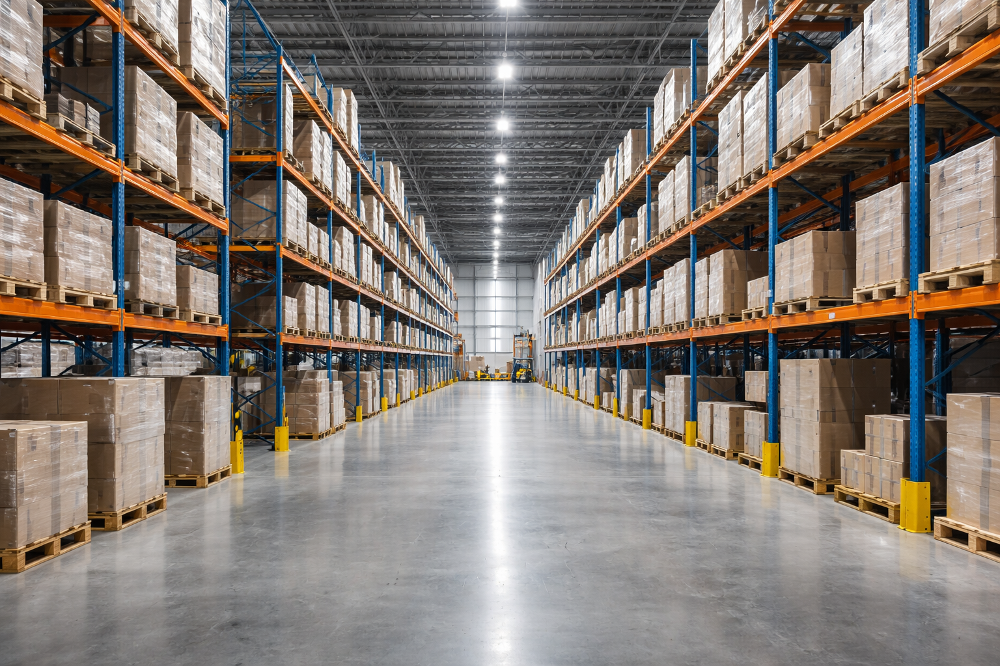

Sourcing fournisseur
Recherche, qualification et coordination avec les fabricants selon votre besoin produit.
Un accompagnement structuré, de l’usine jusqu’à la livraison finale.
Nous aidons les entreprises à structurer leurs importations depuis la Chine avec un suivi opérationnel local, une coordination directe avec les fournisseurs et une gestion logistique complète.
Nous accompagnons importateurs, marques et acteurs e-commerce dans leurs opérations depuis la Chine, avec un suivi terrain et une coordination logistique complète.
Notre rôle consiste à fluidifier les échanges, vérifier les étapes sensibles, préparer les opérations logistiques et sécuriser le transport jusqu’à destination.
Une offre pensée pour les entreprises qui veulent importer depuis la Chine avec un accompagnement concret, opérationnel et adaptable.
Recherche, qualification et coordination avec les fabricants selon votre besoin produit.
Contrôle des points sensibles avant expédition pour limiter les erreurs et les litiges.
Réception, regroupement, préparation des commandes et organisation du départ marchandise.
Solutions maritimes, aériennes et terrestres selon vos délais, volumes et contraintes.
Préparation documentaire, coordination des formalités et fluidification du passage douanier.
Gestion adaptée aux vendeurs e-commerce et aux expéditions vers les entrepôts Amazon.
Notre approche suit une logique simple : comprendre votre besoin, intervenir localement quand c’est nécessaire et piloter les flux jusqu’à la bonne destination.
Étude du produit, du flux et des contraintes pour définir la meilleure stratégie.
Échanges fournisseurs, préparation opérationnelle et suivi des étapes clés.
Organisation du transit, gestion documentaire et livraison finale.
Deux scénarios typiques de missions que nous pouvons gérer selon les objectifs du client et la complexité du flux.

Contexte : besoin d’identifier un fabricant fiable en Chine et de structurer l’exportation.
Intervention : sourcing fournisseur → coordination → validation → transit international.

Contexte : plusieurs commandes provenant de fournisseurs différents à regrouper avant départ.
Intervention : réception → contrôle → regroupement → préparation → envoi final.
Discutons de votre besoin, de votre flux logistique et de la meilleure façon de sécuriser votre opération.